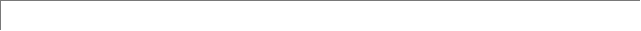

被打断后离开App前台

再次打开App的交互结果(含返回)

备注
点击home键返回主屏幕

继续显示原页面和警告框，如果间隔时间超过1分钟请追加事件刷新当前页面

临时去接电话
继续显示原页面和警告框，如果间隔时间超过1分钟请追加事件刷新当前页面
异常关闭/闪退/进程被杀
加载首页
上报友盟
收到短信/App通知去处理
继续显示原页面和警告框，如果间隔时间超过1分钟请追加事件刷新当前页面
登录状态下，被人抢登。
显示警告框"该账号已在其他手机登录，如非本人请赶紧登录并修改密码。"和确定按钮，点击回到App首页。
用户记录中新增
锁屏
继续显示原页面和警告框，如果间隔时间超过1分钟请追加事件刷新当前页面
关机
电话/短信/Push/电量过低
系统通知

优先处理通信，并在处理完毕后能正常恢复软件，继续其原来的功能

比如蓝牙已连接
自动刷新的时间差
iOS系统有后台唤醒自动刷新的方法，时间差由系统决定，仅需RD调用此方法即可。
Android可以根据判断此次打开和上次刷新的时间差，超过产品设定的时间差就自动刷新。主要取决于你们的业务本身，但是也需要考虑服务器的承载问题。
说明哪些地方从后台切换回前台时需要进行数据更新。
只列出需要考虑的场景，iOS只有系统级别的事件处理。当App从在后台回到前台，请展示上次打开应用的快照然后自动刷新该页面。
以上事件中，刷新当前页面之前加一个钩子，判断该页面是由经常更新的模块或者列表构成，具体可咨询PD。
钩子的具体解释最好百度一下，有点像预先留下伏笔然后通过这个判断是否需要回调刷新页面数据的事件。
另外真正优秀的APP是不需要启动页的。努力优化程序，合理的缓存技术适当的异步任务调度等，让用户一打开就停留在主页面，只需要100-300毫秒的加载。